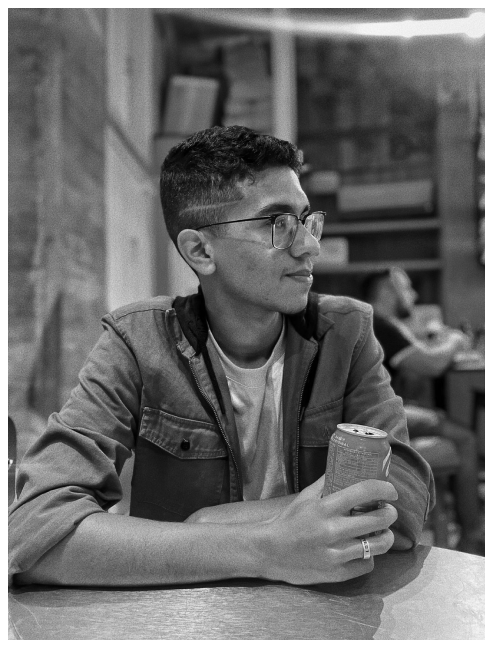

Portfolio
Vitor Augusto
Desenvolvedor Front-End
Me chamo Vitor Augusto, tenho 20 anos e sou um entusiasta da programação, buscando o crescimento dentro da área de programação. Meu currículo profissional atribui-se desde o Ensino Médio Técnico na ETEC, onde conclui o curso técnico de Desenvolvimento de Sistemas e atualmente estou me graduando em Gestão da Tecnoçogia da Informação, onde busco aprofundar meus conhecimentos e habilidades cada vez mais.
